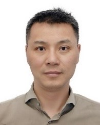
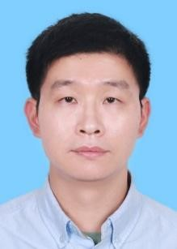

Tutorial proposal
for ACM Multimedia 2021
Jie Chen, Qixiang Ye, Xiaoshan Yang, S. Kevin Zhou, Xiaopeng Hong, Li Zhang
Tutorial title: Few-shot Learning for Multi-Modality Tasks
- Few-shot Learning: Fundamental (Li Zhang)(ppt)
- Few-shot Learning for Medical Image Processing (S. Kevin Zhou)(ppt)
- Few-shot Semantic Segmentation (Qixiang Ye)(ppt)
- Few-shot Incremental Learning (Xiaopeng Hong)(ppt)
- Few-shot Learning for Multi-modality Tasks (Xiaoshan Yang)(ppt)
- Few-shot Medical Image Segmentation(Jie Chen)(ppt)
Proposers
- Li Zhang, Associate Professor, Fudan University, China, lizhangfd@fudan.edu.cn
- S. Kevin Zhou, Distinguished Professor, University of Science and Technology of China, s.kevin.zhou@gmail.com
- Qixiang Ye, Tenured Professor, University of Chinese Academy of Sciences, qxye@ucas.ac.cn
- Xiappeng Hong, Professor, Xi’an Jiaotong University, China, hongxiaopeng@ieee.org
- Xiaoshan Yang, Associate Professor, University of Chinese Academy of Sciences, xiaoshan.yang@nlpr.ia.ac.cn
- Jie Chen, Associate Professor, Peking University, China, jiechen2019@pku.edu.cn
Short bio

- Li Zhang is a tenure-track Associate Professor at the School of Data Science, Fudan University. He was elected to the Shanghai Science & Technology 35 Under 35. Previously, he was a Research Scientist at Samsung AI Center Cambridge, and a Postdoctoral Research Fellow at the University of Oxford. Prior to joining Oxford, he read his PhD in computer science at Queen Mary University of London. The aim of his research group at Fudan is to make the machine see and empower the next generation AI by striving to achieve the most universal representation of understanding objects, scene and motion with mathematical models of neural networks.

- S. Kevin Zhou Professor S. Kevin Zhou obtained his PhD degree from University of Maryland, College Park. He is a Distinguished Professor and founding Executive Dean of School of Biomedical Engineering at University of Science and Technology of China and an adjunct professor at Chinese Academy of Sciences and Chinese University of Hong Kong (Shenzhen). He was a Principal Expert and a Senior R&D director at Siemens Healthcare. Dr. Zhou has published 200+ book chapters and peer-reviewed journal and conference papers, registered 140+ granted patents, written two research monographs, and edited three books. His two most recent books are entitled “Medical Image Recognition, Segmentation and Parsing: Machine Learning and Multiple Object Approaches, SK Zhou (Ed.)” and “Deep Learning for Medical Image Analysis, SK Zhou, H Greenspan, DG Shen (Eds.).” He has won multiple awards including R&D 100 Award (Oscar of Invention), Siemens Inventor of the Year, and UMD ECE Distinguished Aluminum Award. He has been an associate editor for IEEE Transactions on Medical Imaging and Medical Image Analysis, a program co-chair for MICCAI2020, an area chair for AAAI, ICCV, CVPR, MICCAI, and NeurIPS, an executive treasurer and board member of the MICCAI Society. He is a Fellow of National Academy of Inventors (NAI), IEEE, and AIMBE.
- Qixiang Ye Qixiang Ye is a full professor with the University of Chinese Academy of Sciences since 2016. He is one of the funding directors of pattern recognition and intelligent system development (Pri-SDL) lab. He received the B.S. and M.S. degrees in mechanical and electrical engineering from Harbin Institute of Technology, China, respectively, and the Ph.D. degree from the Institute of Computing Technology, Chinese Academy of Sciences. He was a visiting assistant professor with the Institute of Advanced Computer Studies (UMIACS), University of Maryland, College Park until 2013 and a visiting scholar of Duke University EECS in 2016. His research interests include visual object detection and machine learning, especially for feature representation learning, weakly supervised learning, self-supervised learning for visual object sensing. With more than 80 papers published in refereed conferences and journals including IEEE T-ITS, TIP, TNN, T-PAMI, CVPR, ICCV, ECCV, AAAI, and NeurIPS. Dr. Ye received the Sony Outstanding Paper Award and the LuJiaXi Young Researcher Award. He is an SPC of IJCAI 2020 and 2021 and on the editor boards of IEEE Transactions on Intelligent Transportation System and IEEE Transactions on Circuit and System on Video Technology.
- Xiaopeng Hong is a distinguished research fellow at Xi’an Jiaotong University, PRC. He had been a senior researcher/adjunct professor with University of Oulu, Finland until 2019. He has authored over 50 articles in top-tier journals and conferences such as IEEE T-PAMI and CVPR. He has served as an area chair/SPC for ACM MM 21/20, AAAI 21 and IJCAI21, a guest editor for Pattern Recognition Letter and Signal, Image and Video Processing, and a co-organizer of six interaction workshops and challenges in conjunction with CVPR, ACM MM, FG, and ACCV. His current research interests include visual surveillance, continual learning, robotic planning, and micro-expression analysis. His studies about subtle facial movement analysis have been reported by International media like MIT Technology Review and been awarded the IEEE Finland Section best student conference paper of 2020.
- Xiaoshan Yang received the Ph.D. degree in pattern recognition and intelligent systems from Institute of Automation, Chinese Academy of Sciences in 2016. He is currently an Associate Professor with the Institute of Automation, Chinese Academy of Sciences. His research focuses on data-driven and knowledge-guided multimedia content understanding. He has authored or co-authored more than 40 journal/conference papers, where 22 of them are IEEE/ACM transactions or CCF-A conferences, e.g., IEEE TMM, IEEE TIP, IEEE TCYB, ACM TOMM, IEEE CVPR, ACM MM and AAAI. He won the President Award of Chinese Academy of Sciences in 2016, the Excellent Doctoral Dissertation of Chinese Academy of Sciences in 2017, the CCF-Tencent Rhino Bird Excellence Award in 2018. He was an area chair of ICPR 2020, TPC member of ACM multimedia 2018/2019/2020/2021, reviewer of IEEE TMM/IEEE TCSVT/PR/ACM TIST/ACM TOMM/IEEE CVPR/IEEE ICCV/ACM MM.

- Jie Chen received the MSc and PhD degrees from the Harbin Institute of Technology, China, in 2002 and 2007, respectively. He joined the faculty with the Graduate School in Shenzhen, Peking University, in 2019, where he is currently an associate professor with the School of Electronic and Computer Engineering, Peking University. Since 2018, he has been working with the Peng Cheng Laboratory, China. From 2007 to 2018, he worked as a senior researcher with the Center for Machine Vision and Signal Analysis, University of Oulu, Finland. In 2012 and 2015, he visited the Computer Vision Laboratory, University of Maryland and School of Electrical and Computer Engineering, Duke University respectively. He was a cochair of International Workshops at ACCV, CVPR, ICCV and ECCV. He was a guest editor of special issues for IEEE TPAMI, IJCV and Neurocomputing. His research interests include deep learning, computer vision, and medical image analysis. He is an Associate Editor of the Visual Computer. He is a member of the IEEE.
Preference for half-day event and Rough program outline
| Time | Event |
|---|---|
| 8:50~9:00 | Opening |
| 9:00~ 9:30 | Invited Talk by Li Zhang (Talk 1) |
| 9:30~ 10:00 | Invited Talk by S. Kevin Zhou (Talk 2) |
| 10:00~10:30 | Invited Talk by Qixiang Ye (Talk 3) |
| 10:30~11:00 | Coffee break |
| 11:00~11:20 | Invited Talk by Xiaopeng Hong (Talk 4) |
| 11:20~11:40 | Invited Talk by Xiaoshan Yang (Talk 5) |
| 11:40~12:00 | Invited Talk by Jie Chen (Talk 6) |
| 12:00~12:10 | Closing Remarks |
Motivation
Recent deep learning methods rely on a large amount of labeled data to achieve high performance. These methods may be impractical in some scenarios, where manual data annotation is costly or the samples of certain categories are scarce (e.g., tumor lesions, endangered animals and rare individual activities). When only limited annotated samples are available, these methods usually suffer the overfitting problem severely, the performance usually degrades significantly. In contrast, humans can recognize the objects in the images rapidly and correctly with their prior knowledge after exposed to only a few annotated samples. To simulate the learning schema of humans and relieve the reliance on the large-scale annotation benchmarks, researchers start shifting towards the few-shot learning problem: they try to learn a model to correctly recognize novel categories with only a few annotated samples.
Course description
Substantial progress has been made in computer vision tasks. This attributes to large-scale datasets with precise annotations and convolutional neural networks (CNNs) capable of absorbing the annotation information. However, annotating large-scale datasets with semantic masks is expensive, laborious, or even impractical, which violates the principle of cognitive learning where models should be constructed based on few supervisions. In practical applications, such as medical processing, it is usually difficult to collect annotated images since medical experts are usually quite busy but annotating medical images is time consuming. In this tutorial, we propose to introduce few-shot learning methods, which target at finding features that can generalize well to novel classes. With this tutorial, we give an overview about the recent progress in few-shot vision recognition, few-shot object detection, few-shot segmentation, few-shot medical image processing, and few-shot multi-modality tasks. It is expected that such a tutorial could inspire more cutting-edge methods in both the computer vision and multi-media areas in the near future.
Topics
Topic 1. Few-shot Learning: Fundamental (Li Zhang)
Few-shot learning (FSL) aims to recognize target classes by adapting the prior knowledge learned from source classes. Such knowledge usually resides in a deep embedding model for a general matching purpose of the support and query image pairs. In this talk, I will first introduce a conceptually simple, flexible, and general framework for few-shot learning, called the Relation Network (RN). It learns to learn a deep distance metric to compare a small number of images within episodes, each of which is designed to simulate the few-shot setting. Once trained, a RN is able to classify images of new classes by computing relation scores between query images and the few examples of each new class without further updating the network. Then we repurpose the contrastive learning with Noise Contrastive Estimation (NCE) for such matching to learn a few-shot embedding model in a supervised manner, exploiting the patch-wise relationship to substantially improve the popular infoNCE.
Topic 2. Few-shot Learning for Medical Image Processing (S. Kevin Zhou)
Artificial intelligence or deep learning technologies have gained prevalence in solving medical imaging tasks. In this talk, we first review the traits that characterize medical images, such as multi-modalities, heterogeneous and isolated data, sparse and noisy labels, imbalanced samples. We then summarize some properties of deep learning technologies, including the paradigm shift from “small task, big data” to “big task, small data”. Finally, we illustrate the trends of AI technologies in medical imaging and present a multitude of algorithms:
- Annotation-efficient methods that tackle medical image analysis without many labelled instances, including one-shot or label-free inference approaches.
- Universal models that learn “common + specific” feature representations for multi-domain tasks to unleash the potential of ‘bigger data’, which are formed by integrating multiple datasets associated with tasks of interest into one use.
- “Deep learning + knowledge modeling” approaches, which combine machine learning with domain knowledge to enable start-of-the-art performances for many tasks of medical image reconstruction, recognition, segmentation, and parsing.
Topic 3. Few-shot semantic segmentation (Qixiang ye)
Few-shot semantic segmentation remains an open problem for the lack of effective method to handle the semantic misalignment between objects. In this talk, we introduce a part-based semantic transform (PST), and target at aligning object semantics in support images with those in query images by semantic decomposition-and-match. The semantic decomposition process is implemented with prototype mixture models (PMMs), which use an Expectation Maximization (EM) algorithm to decompose object semantics into multiple prototypes corresponding to object parts. The semantic match between prototypes is performed with a min-cost flow module, which encourages correct correspondence while depressing mismatches between object parts. With semantic decomposition-and-match, PST enforces network’s tolerance to objects' appearance and/or pose variation, and facilities channel-wised and spatial semantic activation of objects in query images. In the PST framework, we furhter propose anti-aliasing semantic reconstruction (ASR), provides a systematic yet interpretable solution for few-shot learning problems. Extensive experiments on PASCAL VOC and MS COCO datasets show that ASR achieves strong results compared with the prior works. (ECCV2020, CVPR2021, TNNLS2021, TIP-2020)
Topic 4. Few-shot Incremental Learning (Xiaopeng Hong)
Recently, graph-based methods have achieved great success in the few-shot classification task by capturing the instance-level relations of samples. However, most of them ignore exploring the class-level knowledge that can be easily learned by humans from just a handful of samples. This talk introduces an Explicit Class Knowledge Propagation Network (ECKPN), which can explicitly learn the richer class knowledge to guide the graph-based inference of query samples. Meanwhile, this talk also discusses the challenges of applying few-shot learning in multimedia. (1) There is always a large modality gap between different modalities, which makes it difficult to learn effective multimodal features with only a few labeled samples. (2) Although there are already many successful few-shot learning methods in image classification, the multimodal few-shot learning is much more challenging due to the complexity of the multimodal data. To deal with these challenges, a two-stream graph network-based multimodal few-shot learning approach is presented in this talk.
Topic 5. Few-shot Learning for Multi-Modality Tasks (Xiaoshan Yang)
The ability to incrementally learn new classes is crucial to the development of real-world artificial intelligence systems. We focus on a challenging but practical few-shot class-incremental learning (FSCIL) problem. FSCIL requires CNN models to incrementally learn new classes from very few labelled samples, without forgetting the previously learned ones. To address this problem, we represent the knowledge using a neural gas (NG) network, which can learn and preserve the topology of the feature manifold formed by different classes. On this basis, we propose the TOpology-Preserving knowledge InCrementer (TOPIC) framework. TOPIC mitigates the forgetting of the old classes by stabilizing NG’s topology and improves the representation learning for few-shot new classes by growing and adapting NG to new training samples. We further introduce the graph-based distillation approach into FSCIL and propose the exemplar relation distillation incremental learning framework to balance the tasks of old-knowledge preserving and new-knowledge adaptation. A large number of experiments show that our method substantially outperforms other CIL and FSCIL methods on CIFAR100, miniImageNet, and CUB200 datasets.
Topic 6. Few-shot Medical Image Segmentation (Jie Chen)
Few-shot learning is a typical scenario for medical image analysis. In medical domain, manual data annotation is very expensive and the samples of certain categories are scarce (e.g., tumor lesions). In this talk, we will focus on medical image segmentation, i.e., nuclear instance and polyp segmentation. For the nuclear instance segmentation, we propose a novel direction guided network (DGN). Specifically, we first define the direction feature to represent the spatial relationship between pixels. Based on direction feature, we propose a direction difference map (DDM) to reflect the direction difference of adjacent pixels and guide network to identify the instance boundary, especially the boundary of overlapping regions. Further, we propose a direction-guided refinement module, which effectively integrates auxiliary tasks and is used as a plug-and-play module to form the refining network for nuclear instance segmentation. For the polyp segmentation, we propose a Learnable Oriented-Derivative Network (LOD-Net) to refine the accuracy of boundary predictions for polyps. In particular, it firstly calculates eight oriented derivatives at each pixel for a polyp. It then selects those pixels with large oriented-derivative values to constitute a candidate border region of a polyp. It finally refines boundary prediction by fusing border region features and also those high-level semantic features calculated by a backbone network.
Audience
According to our experience in the previous workshop, it is expected to get about 100 attendees. Anticipated target audience would be intermediate and advanced researchers.
Description of materials
Slides will be distributed to the attendees.
Key Publications of Proposers On the Tutorial Topic
- Flood Sung, Yongxin Yang, Li Zhang, Tao Xiang, Philip H.S. Torr, Timothy M. Hospedales, Learning to Compare: Relation Network for Few-Shot Learning, CVPR 2018 (1412 citations by Google Scholar)
- Yikai Wang, Li Zhang, Yuan Yao, Yanwei Fu, How to trust unlabeled data? Instance Credibility Inference for Few-Shot Learning, IEEE TPAMI 2021
- Chen Liu, Yanwei Fu, Chengming Xu, Siqian Yang, Jilin Li, Chengjie Wang, Li Zhang, Learning a Few-shot Embedding Model with Contrastive Learning, AAAI, 2021
- Yikai Wang, Chengming Xu, Chen Liu, Li Zhang, Yanwei Fu, Instance Credibility Inference for Few-Shot Learning, CVPR, 2020
- Hongguang Zhang, Li Zhang, Xiaojuan Qi, Hongdong Li, Philip H.S. Torr, Piotr Koniusz, Few-shot Action Recognition with Permutation-invariant Attention, ECCV, 2020
- Yuqian Fu, Li Zhang, Junke Wang, Yanwei Fu, Yu-Gang Jiang, Depth Guided Adaptive Meta-Fusion Network for Few-shot Video Recognition, ACM MM 2020
- S. Kevin Zhou, H. Greenspan, C. Davatzikos, J.S. Duncan, B. van Ginneken, A. Madabhushi, J.L. Prince, D. Rueckert, and R.M. Summers, “A review of deep learning in medical imaging: Imaging traits, technology trends, case studies with progress highlights, and future promises,” Proceedings of the IEEE, 2021
- Q. Yao, L. Xiao, P. Liu, and S. Kevin Zhou, “Label-free segmentation of COVID-19 lesions in lung CT,” IEEE Trans. on Medical Imaging, 2021.
- G. Shi, L. Xiao, Y. Chen, and S. Kevin Zhou, “Marginal loss and exclusion loss for partially supervised multi-organ segmentation,” Medical Image Analysis, 2021.
- H. Li, H. Han, Z. Li, L. Wang, Z. Wu, J. Lu, and S. Kevin Zhou, “High-resolution chest X-ray bone suppression using unpaired CT structural priors,” IEEE Trans. on Medical Imaging, 2020.
- C. Huang, H. Han, Q. Yao, S. Zhu, and S. Kevin Zhou, “3D U2Net: A 3D universal u-net for multi-domain medical image segmentation,” MICCAI, 2019.
- B. Li, B. Yang, C. Liu, F. Liu, R. Ji, Q. Ye, “Beyond Max-Margin: Class Margin Equilibrium for Few-shot Object Detection,” CVPR 2021.
- B. Liu, Y. Ding, J. Jiao, X. Ji, Q. Ye, Anti-aliasing Semantic Reconstruction for Few-Shot Semantic Segmentation, CVPR 2021.
- B. Yang, C Liu, B. Li, J. Jiao, Q. Ye, “Prototype Mixture Models for Few-shot Semantic Segmentation,” ECCV 2020.
- B. Liu, J. Jiao, Q. Ye, “Harmonic Feature Activation for Few-Shot Semantic Segmentation,” IEEE Trans. Image Process, 30(2):3142 - 3153, 2021
- Xiaoyu Tao, Xiaopeng Hong, Xinyuan Chang, Songlin Dong, Xing Wei, Yihong Gong. Few-Shot Class-Incremental Learning. CVPR, 2020. Oral
- Songlin Dong, Xiaopeng Hong, Xiaoyu Tao, Xinyuan Chang, Xing Wei, Yinghong Gong. Few-Shot Class-Incremental Learning via Relation Knowledge Distillation. AAAI, 2021.
- Xiaoyu Tao, Xinyuan Chang, Xiaopeng Hong, Songlin Dong, Xing Wei, Yihong Gong. Topology-Preserving Class-Incremental Learning. ECCV, 2020.
- Xiaoyu Tao, Xiaopeng Hong, Xinyuan Chang, Yihong Gong. Bi-objective Continual Learning: Learning ‘New’ while Consolidating ‘Known,’ AAAI, 2020.
- Chaofan Chen, Xiaoshan Yang, Changsheng Xu, Xuhui Huang, Zhe Ma: ECKPN: Explicit Class Knowledge Propagation Network for Transductive Few-shot Learning, CVPR 2021
- Yi Huang, Xiaoshan Yang, Junyu Gao, Jitao Sang, Changsheng Xu, Knowledge-driven Egocentric Multimodal Activity Recognition, TOMM, 2020
- Fan Qi, Xiaoshan Yang, Changsheng Xu, Emotion Knowledge Driven Video Highlight Detection, IEEE TMM, 2020
- Li Liu, Wanli Ouyang, Xiaogang Wang, Paul Fieguth, Jie Chen, Xinwang Liu, Matti Pietikäinen; Deep Learning for Generic Object Detection: A Survey, IJCV, 2019, (780 citations by Google Scholar)
- Xiawu Zheng, Rongrong Ji_, Qiang Wang, Yuhang Chen, Baochang Zhang, Jie Chen, Qixiang Ye, Feiyue Huang, Yonghong Tian, MIGO-NAS: Towards Fast and Generalizable Neural Architecture Search, IEEE TPAMI, 2021
- Hongliang He, Yao Ding, Guoli Song, Pengxu Wei, Jie Chen, DGN: Direction Guided Network for Nuclear Instance Segmentation, ICCV
- Mengjun Cheng, Zishang Kong, Jie Chen, Learnable Oriented-Derivative Network for Polyp Segmentation, MICCAI 2021
Main contact:
Jie Chen
Peking University, China
jiechen2019@pku.edu.cn